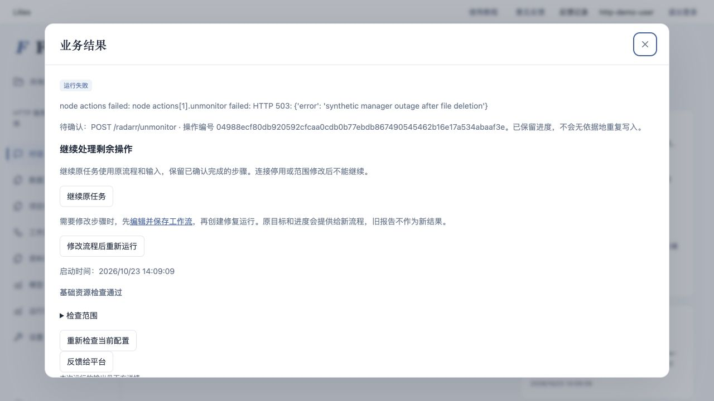
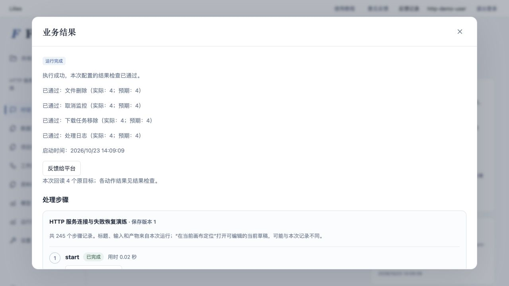
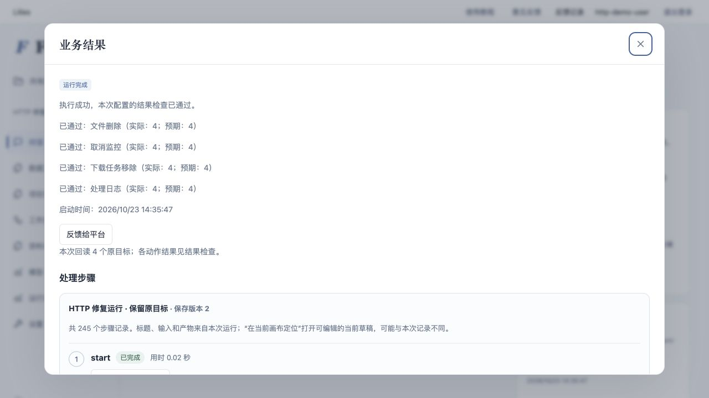
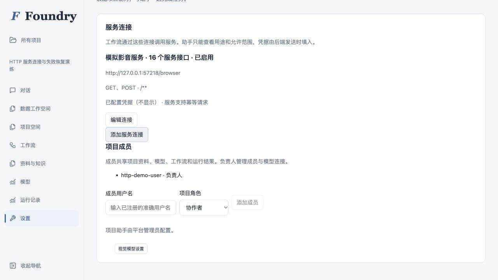
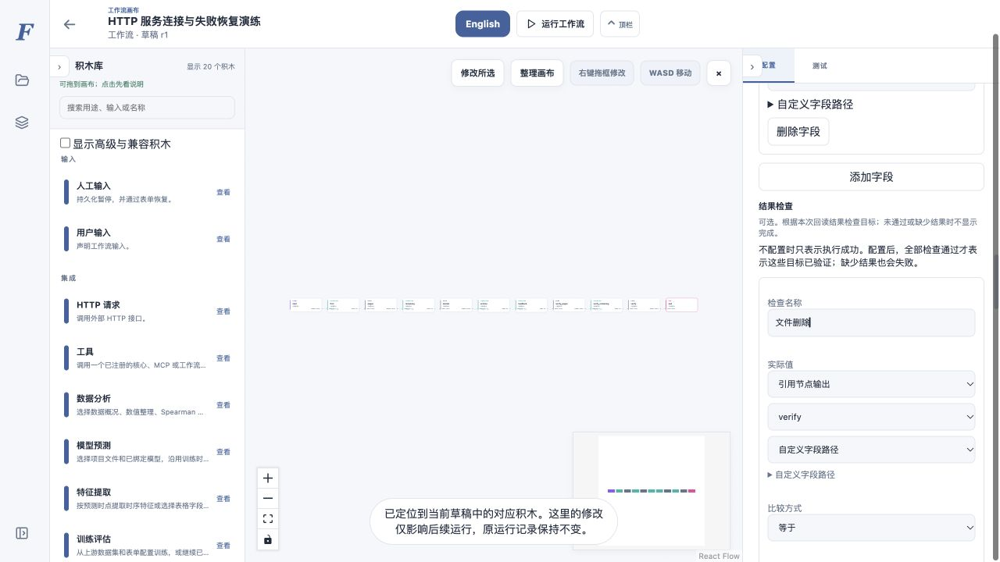

2026-10-23 · 隔离开发版 · 未合并 / 未发布HTTP 工作流：连接、恢复与完成判定
普通项目账号已经可以调用配置好的合成服务。删除后的部分失败可以补齐余项，成功必须对应本次结果检查。
同一假后端 · 13 条影片 · 16 类接口 · 真实 HTTP / Docker · 0 次付费模型调用
27 / 27项目 HTTP 与恢复专项通过
4 → 16四个目标、十六个实际效果
4 次删除请求，无重复删除
修复前后
| 问题 | 历史实验 | 本轮验证 |
|---|
| 项目入口 | 普通项目被密钥 / 网络策略阻止，管理员独立运行成功不能替代 | 项目服务连接限定目标、路径和方法；普通账号及共享助手接口实际调用 |
| 部分完成 | 删除后取消监控失败；新运行把文件不存在当作可跳过 | 固定原目标；继续原任务与修改后修复均补齐监控、下载及日志 |
| 安全重试 | 缺少统一的已执行 / 未知状态处理 | 最多三次；写入需要幂等或明确回读。无法确认时停止重发并保留进度 |
| 完成判断 | 节点全成功仍可能漏必要动作 | 故意省略日志后结束检查失败；补齐后四项 4/4 |
两条浏览器恢复路径
第一轮在普通项目页面创建连接并运行。第二个目标删除后发生 503，保留五个已完成效果。恢复合成服务后点击「继续原任务」，原任务编号不变，四项结果检查通过。

失败页保留待确认操作、继续与修复入口，没有成功报告。
继续原任务：文件、监控、下载和日志分别回读，均为 4/4。
第二轮从失败任务进入画布，修改检查说明并保存版本 2，再点击「修改流程后重新运行」。新任务约 19.2 秒完成，旧任务仍为失败；删除总请求仍为四次。浏览器此处修改的是配置文案；补齐被省略动作的修复另由行为测试验证。

新任务使用保存版本 2，只显示本次回读结果。
演练期间发现并修复恢复按钮重复、修复后结果链接仍指向旧任务两个页面问题。当前构建已用只读修复流程确认地址栏更新、刷新后仍显示新任务结果。因此本批是开发验收，不称为零技术救援盲测。
配置入口

负责人配置允许范围；再次编辑不返回旧凭据，助手只能读连接说明。
结果检查表单可引用上游回读与计算值，无需编写 JSON。
自动化与边界
| 完整后端 | 5605 通过 / 67 跳过 / 0 失败 |
|---|
| HTTP 专项 | 27 通过，包含真正独立 API 进程关闭并重启后的恢复 |
|---|
| 前端 | 563 项通过；类型检查和生产构建通过 |
|---|
| 远端 CI | 已配置 HTTP 沙箱验收步骤；未推送，尚未运行 GitHub CI |
|---|
另覆盖跨项目、越界和重定向拒绝、连接停用、凭据更新、成员撤销、重复请求与并发继续、503 / 401、字段 / 文件版本变化、响应丢失、同名 / 重复编号、Keep / 观看 / 做种 / 时间边界，以及更换编号、分页大小和字段映射。
合成接口不是 Emby 等原厂协议兼容实现，没有操作真实 NAS。共用生成说明、HTTP 手册和 Skill 已更新；没有新增真实模型自主生成验证，不能据此保证以后所有生成都正确。旧流程没有结果检查时只表示执行成功。
可核对的运行摘要 JSON · 完整说明与复现命令